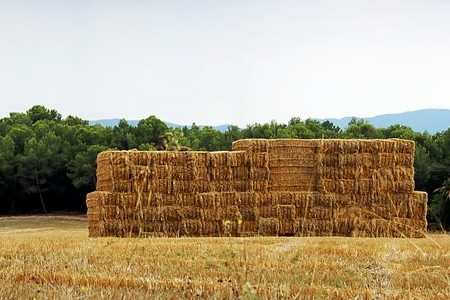

Soda Springs, Idaho

Weather Summary
Currently:
High: ℉
Wind Chill:
Humidity: %
Wind Speed: mph
5-Day Forecast

Hay Bales
by Mia Thornton
I love looking out my window as I drive by all the farms and
seeing the many hay bales stacked or strewn out across the land. It makes me
realize how life keeps going; that the people of this town are hard-working
and driven to keep everything going.
The hay bales remind me that we are
industrious, and will withstand the strong winds that can sometimes come our way.
These hay bales represent quiet fortitude as people prepare and plan and keep the
farm going. It is a comforting sight, seeing those hay bales, standing like a
firm pillar, reminding me that we in Soda Springs are strong.